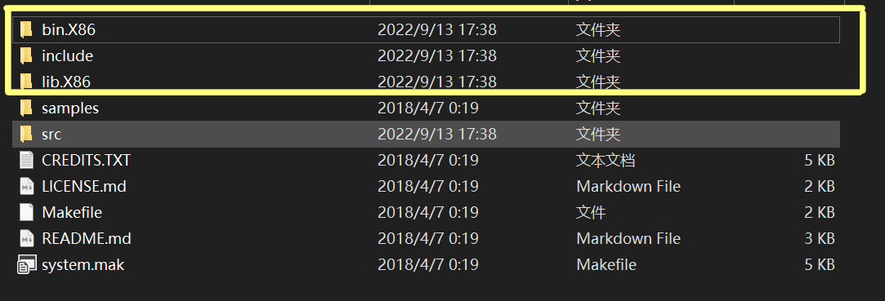

The project Github address : https://github.com/Ganliber/winTracer
About Detour
Detours是一个在x86平台上截获任意Win32函数调用的工具库。中断代码可以在运行时动态加载，也可以在静态执行文件处理。其功能主要有：
- 拦截x86机器上的任意的win32 API函数。
- 插入任意的数据段到PE文件中，修改DDL文件的导入表。
WIN32进程内存管理
- WINDOWS 实现了虚拟存储器，每一WIN32进程拥有4GB的虚存空间
- Detours相关：
- 进程要执行的指令存在于虚存空间
QueryProtectEx：函数把存放指令的页面的权限更改为可读可写可执行，再改写其内容，从而修改正在运行的程序VirtualAllocEx：从一个进程为另一正运行的进程分配虚存，利用QueryProtectEx把页面权限改为rwx，并以二进制机器码的形式写入要执行的指令，实现为一个正在运行的程序注入任意代码
拦截WIN32 API原理
Functions Overview
1
2
3I. Target Function : Function to be intercepted, usually the windows API
II. Trampoline Function : Partial replica of the Target function
III. Detour Function : Function used to replace the Target functionDetour Function
- 此函数是用户需要的截获API的一个模拟版本,调用方式,参数个数必须和目标函数相一致,通过对Trampoline函数的调用后,可以获取目标函数的执行结果,而且可以将目标函数的输出结果进行修改后再传回给应用程序
- Detour提供了 向运行中的应用程序注入Detour函数 和 在二进制文件基础上注入Detour函数 两种方式
Detour Binary Injection
- 通过Detours提供的开发包可以在二进制EXE文件中添加一个名称为Detour的节表
- 主要目的是实现PE加载器加载应用程序的时候会自动加载您编写的Detours DLL，在Detours DLL中的DLLMain中完成对目标函数的Detour
截获API的相关接口
- Detours提供的API 接口可以作为一个共享DLL给外部程序调用，也可以作为一个静态Lib链接到您的程序内部
- 因为Detours中的函数会修改应用程序的地址空间，请确保当加入截获函数或者去掉截获函数的时候没有其他线程在进程空间中执行，这是程序员的责任：一个保证该时刻是单线程执行的简单方法就是在加载Detours库的时候在DllMain中呼叫函数
DetourFunctionWithTrampoline：截获目标函数- Input：trampoline函数，截获函数的指针
DetourFunction：创建一个动态的trampoline函数- Input：一个指向Target函数的指针，截获函数的指针
DetourFindFunction：当目标函数不是很容易使用的时候，该函数可以找到那个函数，不管它是DLL中导出的函数，或者是可以通过二进制目标函数的调试符号找到，DetourFindFunction返回的函数指针可以用来传递给DetourFunction以生成一个动态的trampoline函数- Input：库的名字，函数名
- return：function_pointer or NULL
DetourRemoveTrampoline：去掉对一个目标函数的截获
API截获的两种方法
- 动态 & 静态
编译使用Detour库
index https://github.com/microsoft/Detours, 下载release并解压
打开
VS2022文件夹下的x86 Native Command Prompt for VS 2022( 如需编译64位需要x64 Native Command Prompt for VS 2022)1
2
3powershell
cd beforePath/detour-4.0.1/src
nmake /f Makefile在
detour-4.0.1文件夹下得到（法一）VS中新建dll项目，在调试->dll调试属性->VC++目录
- 在包含目录中加上刚才编译出的include文件夹路径
- 在库目录上加上lib.X86（64位系统则对应lib.X64）
（法二）找到
include/detour.h以及lib.X86/detour.lib可以复制到一个单独的文件夹下使用将
detour.h和detour.lib复制到VS项目下，然后在main.cpp中通过以下代码调用1
2
Task
content
| 序号 | 任务 | 目标 |
|---|---|---|
| 1 | 实现基本的第三方进程WindowsAPI截获框架 | 框架包括1.1 编译生成Detours库1.2 完成挂钩框架DLL，实现对MessageBox调用截获，能打印出调用的参数、进程名称以及进程Exe文件信息1.3 自编或者利用已有恶意代码样例（包含弹出对话框动作）1.4 完成注入动作开启和关闭的“注射器”控制程序 |
| 2 | 实现堆操作API截获 | 修改1.2-1.4，实现堆操作（创建，释放）API进行截获，打印出所有参数信息。 |
| 3 | 实现文件操作API截获 | 实现对文件操作（创建，关闭，读写）API进行截获，打印出所有参数信息。 |
| 4 | 注册表操作API截获 | 实现对注册表操作（创建，关闭，读写）API进行截获，打印出所有参数信息。 |
| 5 | 堆操作异常行为分析 | 设计并完成算法，记录并给出提示： 1.检测堆申请与释放是否一致（正常） 2.是否发生重复的多次释放（异常） |
| 6 | 文件操作异常行为分析 | 设计并完成算法，记录并给出提示： 1. 判断操作范围是否有多个文件夹 2. 是否存在自我复制的情况 3. 是否修改了其它可执行代码包括exe，dll，ocx等 4. 是否将文件内容读取后发送到网络（选做） |
| 7 | 注册表操作异常行为分析 | 设计并完成算法，记录并给出提示： 1. 判断是否新增注册表项并判断是否为自启动执行文件项 2. 是否修改了注册表 3. 输出所有的注册表操作项 |
| 8 | 提供系统界面 | 所设计实现的功能，有图形界面展示 |
| 9 | 行为检测样本库 | 提供5个待检测的可能存在恶意的Exe样本； |
| 10 | 网络通信操作异常行为分析（选做） | 设计并完成算法，记录并给出提示： 1. 实现对网络传输SOCKET操作（连接、发送与接收）API的截获 2. 打印进程连接端口、协议类型、IP信息 3. HTTP连接协议的解析，判断传输的内容是否为明文 |
| 11 | 内存拷贝监测与关联分析（选做） | 设计并完成算法，记录并给出提示：能够输出内存拷贝信息，并分析拷贝的内容流向。 |
API HOOK
| index | API type | WIN32 API |
|---|---|---|
| 1 | 弹窗 1 | MessageBoxA MessageBoxW |
| 2 | 堆 4 | HeapCreate HeapAlloc HeapDestroy HeapFree |
| 3 | 文件 4 | CreateFile WriteFile ReadFile CloseHandle |
| 4 | 注册表 5 | RegCreateKeyEx RegCloseKey RegDeleteValue RegOpenKeyEx //RegQueryValueEx RegSetValueEx |
| 5 | 网络通信 7 | socket WSAStartup connect send recv closesocket WSACleanup |
| 6 | 内存拷贝 | CopyMemory MoveMemory |
暂时有 22 个API
关于 windows 堆
- Windows下的堆主要有两种，进程的默认堆和自己创建的私有堆
程序也可以通过 HeapCreate 函数来调用 ntdll 中的RtlCreateHeap 来创建自己的私有堆
所以一个进程中可以存在多个堆
1
2
3
4
5
6
7
8
9
10
11
12
13
14
15
16
17
18
19
20
21
22
23
24
25
26
27
28------------------------ About Windows Heap
Windows下的堆主要有两种，进程的默认堆和自己创建的私有堆
程序也可以通过 HeapCreate 函数来调用 ntdll 中的RtlCreateHeap 来创建自己的私有堆
所以一个进程中可以存在多个堆
------------------------ APIs
+ HeapCreate // 创建堆句柄（内核对象）
HANDLE HeapCreate(
DWORD flOptions, //堆的相关属性
DWORD dwInitialSize, //堆初始大小
DWORD dwMaximumSize //堆所占内存的最大值
);
+ GetProcessHeap // 获取一个堆句柄
+ GetProcessHeaps // 获取所有堆句柄
+ HeapAlloc // 申请堆空间
LPVOID HeapAlloc(
HANDLE hHeap, //堆句柄，表示在哪个堆上分配内存
DWORD dwFlags, //分配的内存的相关标志
DWORD dwBytes //大小
);
+ HeapReAlloc // 在HeapAlloc的基础上申请一块堆空间
+ HeapFree // 释放堆空间
+ HeapDestory // 销毁堆句柄- Windows下的堆主要有两种，进程的默认堆和自己创建的私有堆
Windows Heap
Windows下的堆主要有两种，进程的默认堆和自己创建的私有堆
程序也可以通过 HeapCreate 函数来调用 ntdll 中的RtlCreateHeap 来创建自己的私有堆
所以一个进程中可以存在多个堆win32 Heap APIs : ( PART )
HeapCreate：创建堆句柄（内核对象）
1
2
3
4
5HANDLE HeapCreate(
DWORD flOptions, //堆的相关属性
DWORD dwInitialSize, //堆初始大小
DWORD dwMaximumSize //堆所占内存的最大值
);GetProcessHeap：获取一个堆句柄
GetProcessHeaps：获取所有堆句柄
HeapAlloc：申请堆空间（从堆上分配一块内存，且分配的内存是不可移动的，即如果没有连续的空间能满足分配的大小，程序不能将其他零散的 空间利用起来，从而导致分配失败）
1
2
3
4
5
6
7LPVOID HeapAlloc(
HANDLE hHeap, //堆句柄，表示在哪个堆上分配内存
DWORD dwFlags, //分配的内存的相关标志
DWORD dwBytes //大小
);
* 如果函数成功，则返回值是指向已分配内存块的指针。
* 如果函数失败，并且您尚未指定HEAP_GENERATE_EXCEPTIONS，则返回值为 NULL。HeapValidate：如果指定的堆或内存块有效，则返回值为非零值。如果指定的堆或内存块无效，则返回值为零（用来处理堆二次释放问题）
1
2
3
4
5
6
7
8
9
10BOOL HeapValidate(
[in] HANDLE hHeap,
[in] DWORD dwFlags,
[in, optional] LPCVOID lpMem
);
---------------------------------------------------------
[in, optional] lpMem
> 指向指定堆中内存块的指针。此参数可能为空
> 如果此参数为 NULL，则该函数将尝试验证 hHeap 指定的整个堆。
> 如果此参数不为 NULL，则该函数将尝试验证 lpMem 所指向的内存块。它不会尝试验证堆的其余部分。HeapFree：如果函数成功，则返回值为非零值。如果函数失败，则返回值为零。应用程序可以调用 GetLast 错误以获取扩展的错误信息。
1
2
3
4
5
6
7
8BOOL HeapFree(
[in] HANDLE hHeap,
[in] DWORD dwFlags,
[in] _Frees_ptr_opt_ LPVOID lpMem
);
---------------------------------------------------------
[in] lpMem
指向要释放的内存块的指针。此指针由堆分布或堆重新分配函数返回。此指针可以为空
Project Framework
Implementation
frontend : misa
Backend : Gin
Interaction : nlohmann json
- [C++ 使用 curl 发送 json 数据](https://blog.csdn.net/fengfengdiandia/article/details/82453328?ops_request_misc=&request_id=&biz_id=102&utm_term=c++ curl 传输json数组&utm_medium=distribute.pc_search_result.none-task-blog-2
allsobaiduweb~default-1-82453328.142^v48^pc_rank_34_default_2,201^v3^control_1&spm=1018.2226.3001.4187) - cppdemo/src/curljson at master · alandtsang/cppdemo (github.com)
- windows
curl库配置：https://blog.csdn.net/bency/article/details/80773932
libcurl导入
编译
curl运行
buildconf.batx64 native tools command prompt for vs2022中进入winBuild然后1
nmake /f Makefile.vc mode=static DEBUG=yes
进入
builds复制第一个文件夹libcurl-vc-x64-debug-static-ipv6-sspi-schannel下的所有文件vs -> 项目 -> [projName]属性 -> 预处理器 -> 预处理器定义添加1
CURL_STATICLIB;
粘贴到项目下的
libcurl文件夹下，最终该VS项目目录如下1
2
3
4
5
6
7
8
9
10
11
12
13
14
15
16
17
18
19.
├─libcurl
│ ├─bin
│ ├─include
│ │ └─curl
│ └─lib
├─nlohmann
│ ├─detail
│ │ ├─conversions
│ │ ├─input
│ │ ├─iterators
│ │ ├─meta
│ │ │ └─call_std
│ │ └─output
│ └─thirdparty
│ └─hedley
└─x64
└─Debug
└─jsonProj.tlog
Debug模式：由于我不喜欢在项目的preference里配置，就以
#pragma的形式载入库1
2
3
4
5
6
7
8
9
10
11
12
13
14
15
16
17
18
19
20
21
22
23
24
using json = nlohmann::json;
using namespace std;
int main() {
json j;
cout << "Fuck u";
curl_easy_init();
return 0;
}
How do C++ send json to other server by http
Code as follows : this will send
POSTrequest to local server at 9999 port with/uploadApiInformation1
2
3
4
5
6
7
8
9
10
11
12
13
14
15
16
17
18
19
20
21
22
23
24
25
26
27
28
29
30
31
32
33
34
35
36
37
38
39
40
41
42
43int sendApiInformation(json& info) {
//取消hook
DetourTransactionBegin();
DetourUpdateThread(GetCurrentThread());
detachAllDetours();
CURL* curl; // handler
CURLcode code = CURLE_FAILED_INIT;
std::string url = "127.0.0.1:9999/uploadApiInformation";
//std::string url = "10.12.173.133:9999/uploadApiInformation";
std::string dump = info.dump();
std::cout << dump << endl;
std::cout << "Why u bully me?" << endl;
curl = curl_easy_init(); // initialize handler
if (curl) {
curl_easy_setopt(curl, CURLOPT_URL, url.c_str());
curl_easy_setopt(curl, CURLOPT_POST, 1L); // POST
curl_easy_setopt(curl, CURLOPT_POSTFIELDS, dump.c_str());
//curl_easy_setopt(curl, CURLOPT_WRITEFUNCTION, write_callback);
//curl_easy_setopt(curl, CURLOPT_WRITEDATA, NULL);
//
code = curl_easy_perform(curl);
if (code != CURLE_OK) {
fprintf(stderr, "curl_easy_perform() failed: %s\n",
curl_easy_strerror(code));
return code;
}
else {
cout << "ApiInformation send successfully!" << endl;
}
curl_easy_cleanup(curl);
}
//重新 Hook
DetourTransactionBegin();
DetourUpdateThread(GetCurrentThread());
attachAllDetours();
return code;
}
Injector : Detour
Addition
- WIN32 API with suffix
A,W,Ex,ExWA表示使用ANSI编码作为标准输入与输出流的文本编码W表示使用Unicode作为编码Ex表示拓展, 标注了Ex的winapi函数会比没有标Ex的函数多一些参数什么的, 可以说拓展了一些功能ExA与ExW就是 A,W与Ex的结合了
- 将L加在字符串前表示其为unicode编码
- L”What a beautiful flower”
Reference
- MDUI : https://www.mdui.org/docs/
- Gin(I) : https://www.kancloud.cn/shuangdeyu/gin_book/949411
- Gin(II) : https://www.topgoer.com/gin%E6%A1%86%E6%9E%B6/
- Gin(III)：https://www.zhihu.com/question/27370112
- CGO : https://chai2010.cn/advanced-go-programming-book/ch2-cgo/ch2-08-class.html
- Go Algorithm : LeetCode 刷题常用数据结构（Go 篇） · Pseudoyu
- Detour: https://github.com/microsoft/Detours/wiki
- Win32 API 中文文档：http://www.office-cn.net/t/api/index.html
- Windows Heap：Windows Heap - Memory Management